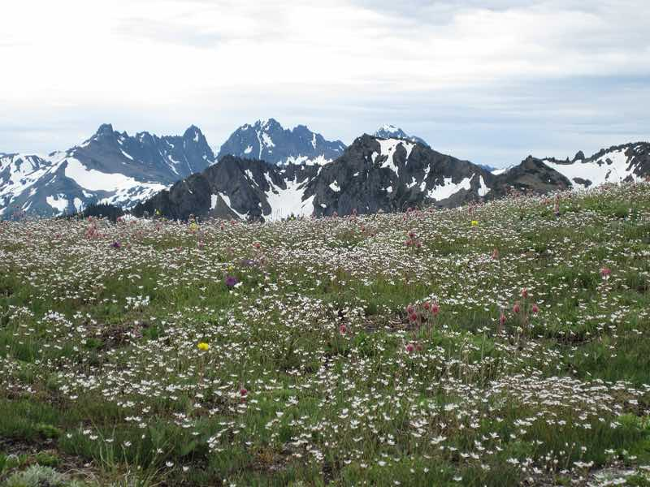
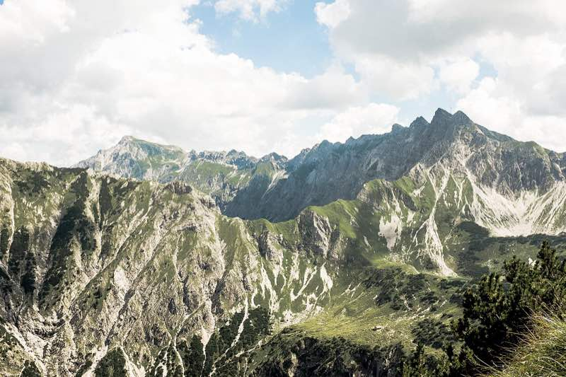
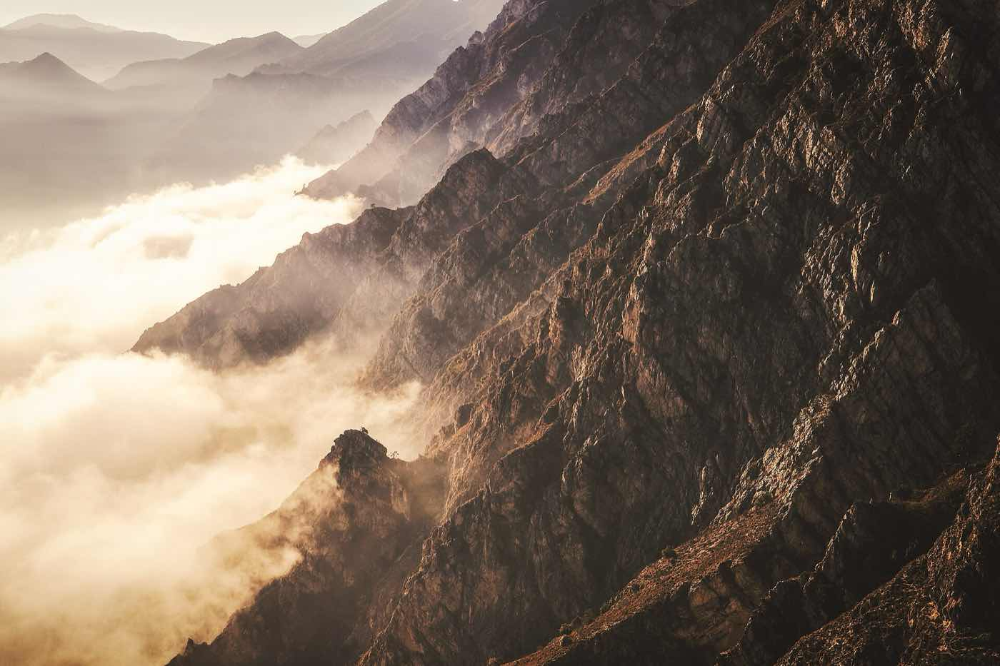
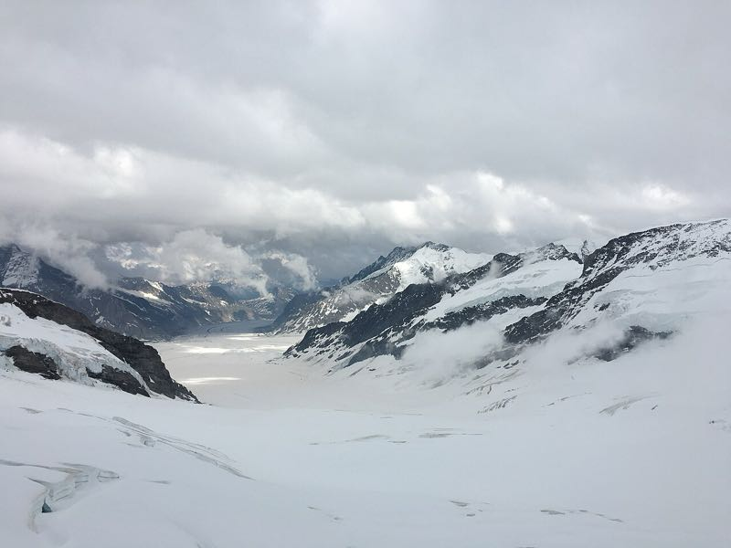
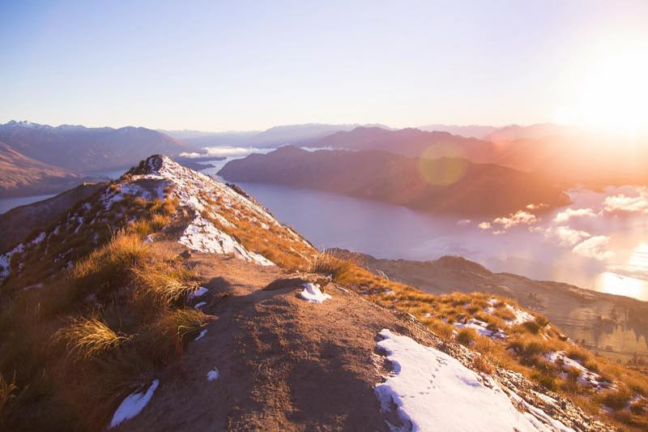

Photos that click into place
Scroll a box, let go, and it slides on until one picture sits right in the middle. It never stops halfway. That is scroll-snap.
The photo strip
Scroll sideways: use the trackpad with two fingers, or click the strip and press the arrow keys.





The strip has scroll-snap-type: x mandatory. Each photo has scroll-snap-align: center.
One year on the mountain
This box snaps up and down. Scroll inside it: each season fills the whole box.
Spring
The snow melts and the streams are loud.
Summer
Green grass, flowers and marmots on the rocks.
Autumn
The larch trees turn bright yellow, then drop their needles.
Winter
Deep snow everywhere. The hut is closed.
The box has scroll-snap-type: y mandatory. Each season has scroll-snap-align: start. The mountains are drawn with CSS, not photos.